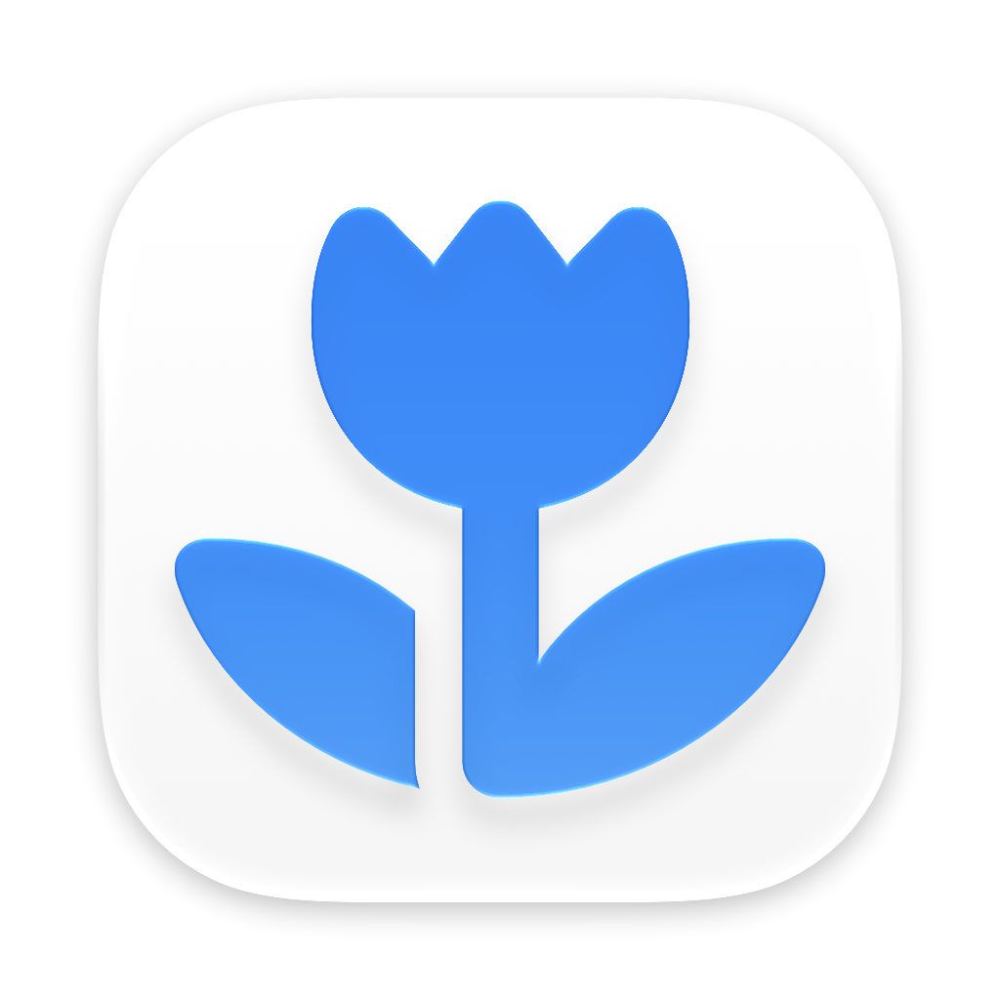

Live p5.js实时 p5.js
Sketches run continuously behind your windows, with a configurable frame-rate cap for quieter power use.草图在窗口背后持续运行，可限制帧率以降低功耗。
03 Generative wallpaper生成艺术壁纸

A living desktop, written in p5.js. 用 p5.js 写成的、会呼吸的桌面。
Tessera renders generative sketches as your macOS wallpaper. Each built-in theme is a small p5.js program, and every sketch can be opened, edited, and made your own. Tessera 把生成艺术草图变成 macOS 动态壁纸。每个内置主题都是一段小型 p5.js 程序，也可以打开、修改，变成你自己的壁纸。
macOS 12 or later · p5.js runtime includedmacOS 12 或更高 · 内置 p5.js 运行时
What it does它能做什么
Tessera runs each wallpaper inside an isolated WKWebView and hands it a p5.js canvas. The result is live, interactive, and editable — not a looping video.Tessera 在隔离的 WKWebView 中运行每张壁纸，把 p5.js 画布交给它。画面是实时的、可交互的、可编辑的，不是循环播放的视频。
Sketches run continuously behind your windows, with a configurable frame-rate cap for quieter power use.草图在窗口背后持续运行，可限制帧率以降低功耗。
Ring Clock, Truchet Tiles, and Matrix Digital Rain — each with its own controls and color options.环形时钟、Truchet 瓷砖、Matrix 数字雨，每个都有独立参数和配色。
Tessera lives in the menu bar, so it stays out of the Dock and keeps the desktop clear.Tessera 常驻菜单栏，不占 Dock，保持桌面干净。
Open any built-in sketch in your editor, change it, save, and reload the wallpaper from the menu.用本地编辑器打开内置草图，修改保存后从菜单重载壁纸。
AppKit windows, SwiftUI settings, a real menu bar item, and a Sparkle-powered updater.AppKit 窗口、SwiftUI 设置、真正的菜单栏项，以及 Sparkle 更新。
The bundled wall command creates, validates, packs, and inspects Wallpaper Script projects.内置 wall 命令可创建、校验、打包和检查 Wallpaper Script 项目。
macOS 12+Built with AppKit, SwiftUI, and WKWebView.由 AppKit、SwiftUI 和 WKWebView 构建。
p5.js 1.xBundled locally; wallpapers do not need a network connection.本地内置，壁纸无需联网。
SparkleDownload once; Tessera can keep itself current.下载一次，之后可由 Tessera 自行更新。
Start here从这里开始
Pick a built-in theme and let it run, or open its source and turn it into something that could only be yours. The wallpaper is a small program, and you own the code.选一个内置主题让它运行，或打开源码改成只属于你的画面。壁纸是一段小程序，代码在你自己手里。
Tessera keeps the p5.js sketch, the host window, and the settings in one project. No package manager, no build step, no separate runtime to install.Tessera 把 p5.js 草图、宿主窗口和设置放在同一个项目里。不需要包管理器、构建步骤或额外运行时。
The wallpaper runs behind your desktop icons. Open the menu bar panel to pause it, switch themes, or enter interaction mode when a sketch needs the mouse.壁纸在桌面图标背后运行。需要暂停、换主题或让草图接收鼠标时，从菜单栏进入对应模式。
macOS appmacOS App
Download Tessera, choose a wallpaper, and open its source when you want to make it yours.下载 Tessera，选一张壁纸；想改成自己的样子时，直接打开源码。